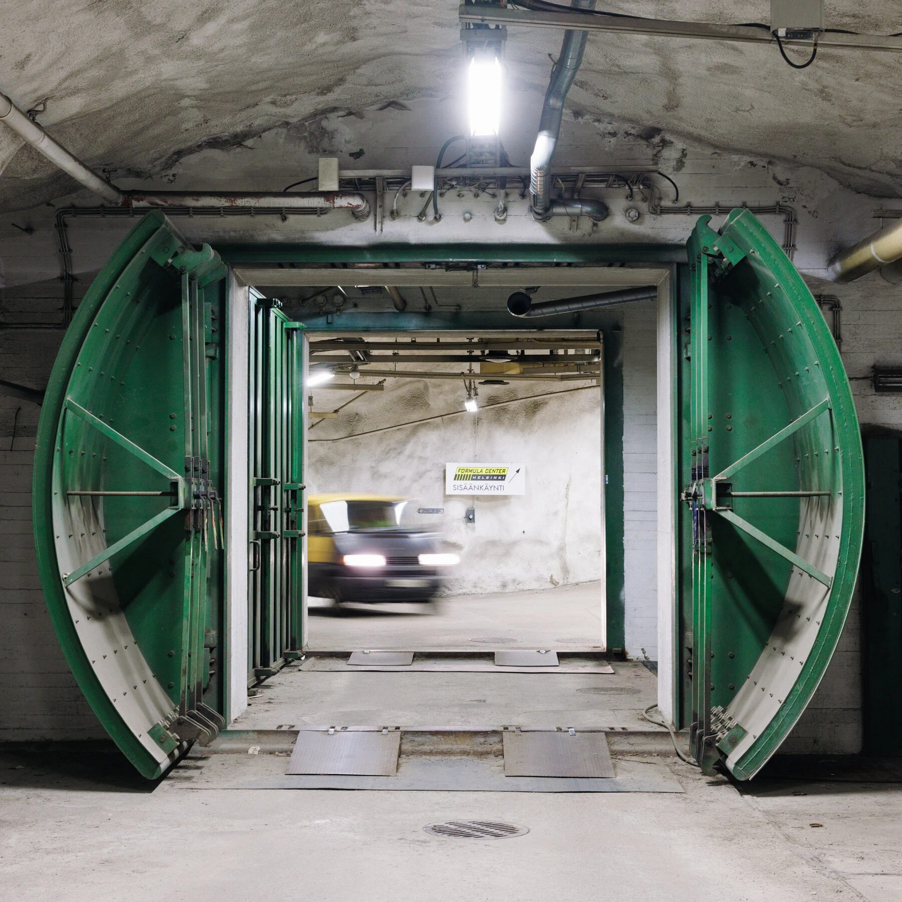
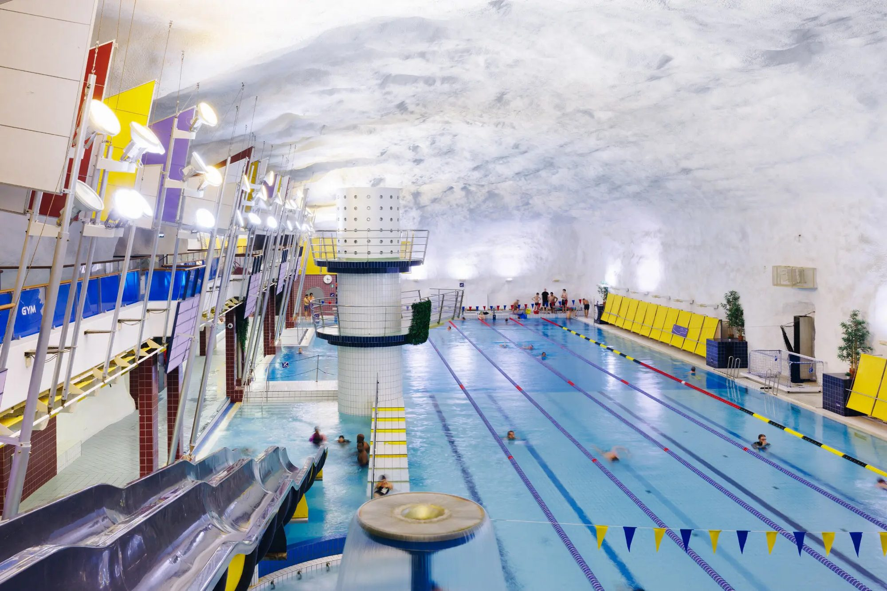
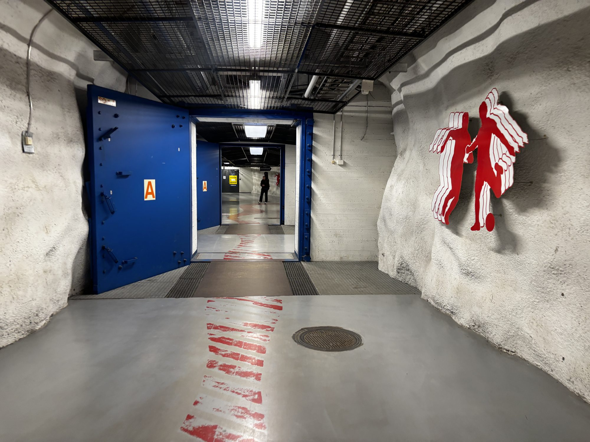
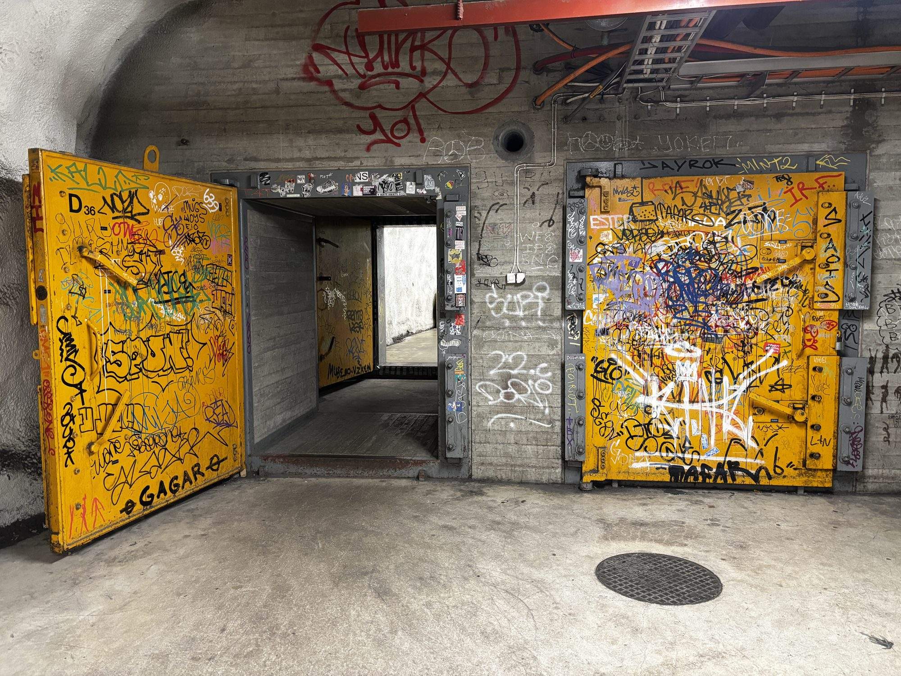
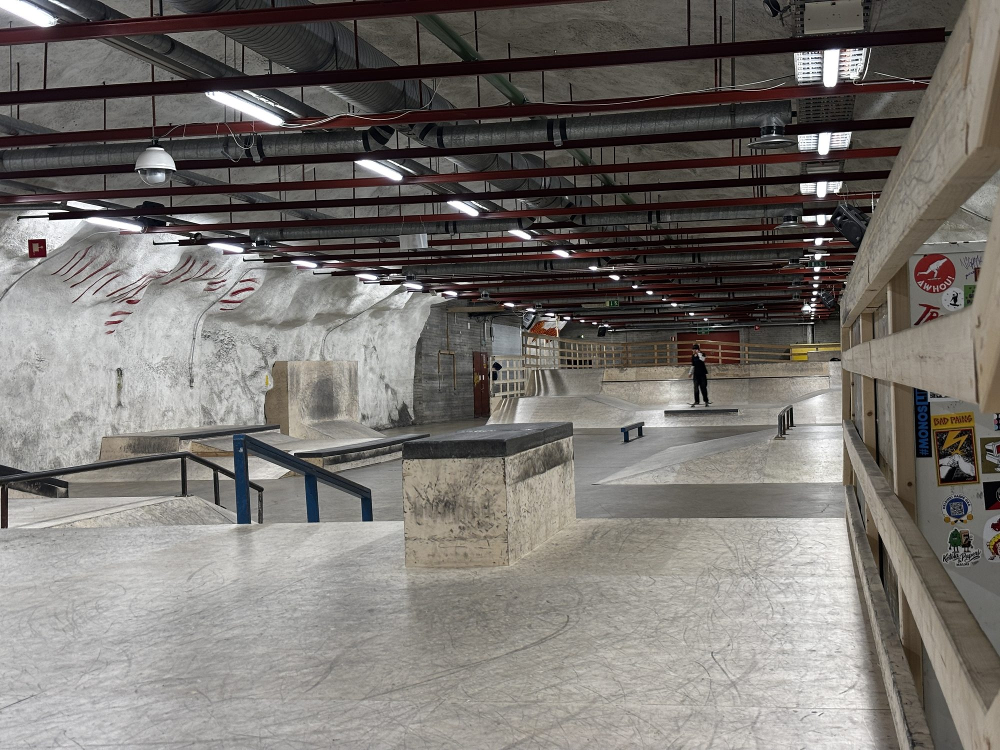
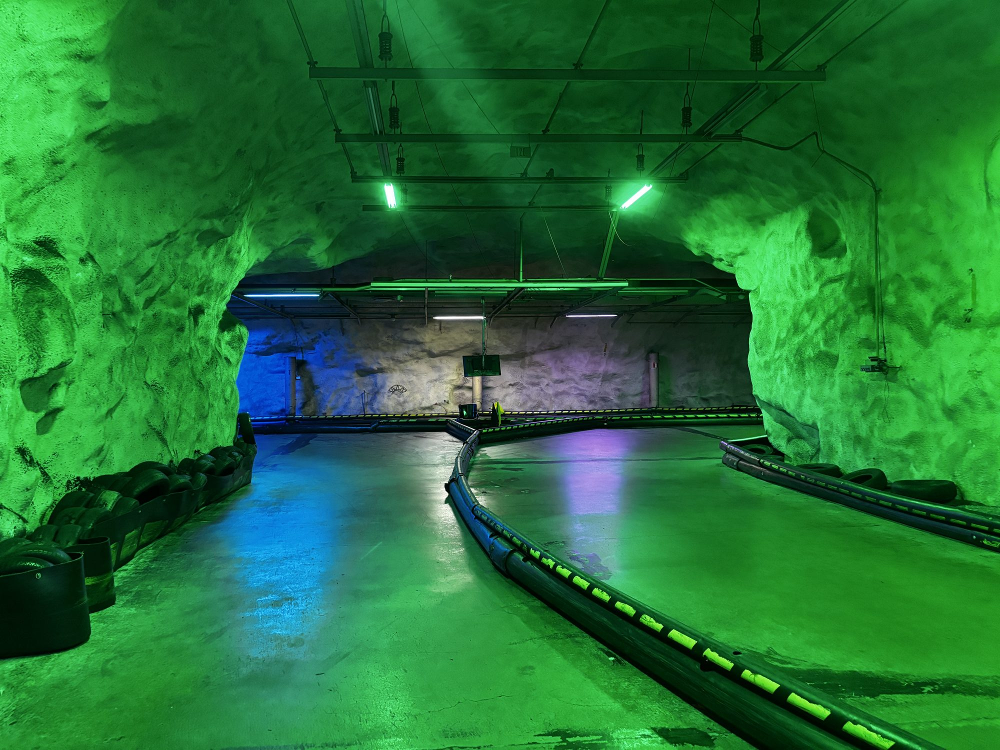

Master thesis · Nordic Urban Planning Studies · 2026
Swimming in the Bunker
The spatial materialisation of institutional trust in Helsinki's civil defence system through dual-use bunkers
Abstract
Helsinki has around 5,500 civil defence shelters, enough to protect more than its entire population. Most of them are dual-use: in normal times they operate as swimming halls, sports arenas, skateparks, car parks and go-kart tracks. In a crisis, the Rescue Act requires them to be cleared and converted within 72 hours. My thesis asks how institutional trust in the Finnish civil defence system is spatially materialised through these bunkers: how it is written into laws, contracts and materials, how it is kept alive through routines, and how it becomes so normal that nobody thinks about the blast doors on the way to the pool.
While other European countries are rebuilding civil protection from scratch, Finland has spent decades weaving it into ordinary city life. The thesis argues that this arrangement is not just a technical solution. It is trust that has taken physical form.

Methods
The thesis is a qualitative single-case study. I combined an analysis of legal and policy documents (the Rescue Act, lease contracts and guidelines) with semi-structured expert interviews with the Helsinki Rescue Department, the city and civic organisations, and with field observations and informal walking interviews at five sites: Itäkeskus Swimming Hall, the Formula Helsinki go-kart track, Arena Center Hakaniemi, Luuppi Indoor Skatepark and, as a contrast case, the Civil Defence Museum in Merihaka, the only site without an everyday civilian use.
The material was coded along three mechanisms that together form the analytical framework: inscription, routinisation and domestication.




Findings
Institutional trust in Helsinki's dual-use bunkers is not a cultural baseline the system happens to enjoy. It is something the system actively produces. Trust is inscribed into regulation and material: the skatepark is built from plywood because concrete would break the 72-hour rule. It is routinised through inspections, training and operators who simply run their business, which confirms again and again that the system will work when it is needed. And it is domesticated through everyday use: the strongest sign of a resilient system is that people stop paying attention to it.
The Civil Defence Museum was the case-internal proof. It is the only site where the shelter function is deliberately in the foreground, and it was the only place during fieldwork where the shelter felt close and present. In a mature institutional arrangement, preparedness looks like ordinary life.
Implications & Personal Learning
For cities that are rebuilding civil protection today, the Helsinki case shows that dual-use is more than a way to save money. It is a design principle that bridges the slow time of hardened infrastructure and the fast, changing needs of urban life. Trust works as a governance technology: it lowers the cost of coordination without the state stepping back, because the state still legislates, funds and inspects.
Personally, the thesis connected my interest in public space with civil protection and urban resilience, a field that most European cities are only now rediscovering. It also taught me to read infrastructure through the people who use it every day: the swimmer, the skater, the operator with a lap record he is proud of.
The full thesis is available on request. If you work on civil protection, dual-use infrastructure or urban resilience, I would love to exchange ideas.
Write me: lennart.reichow@gmail.com